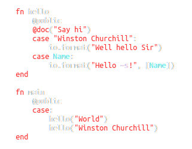

Efene Programming Language
menu
Blog
Docs
Getting Started
Community
Code
Twitter

Efene is a programming language for the
Erlang Virtual Machine
focusing on
simplicity
,
consistency
and
programmer user experience
while maintaining full 1 to 1 mapping with Erlang.